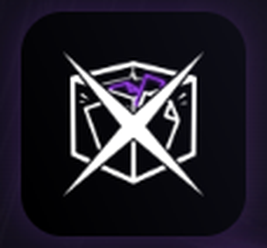
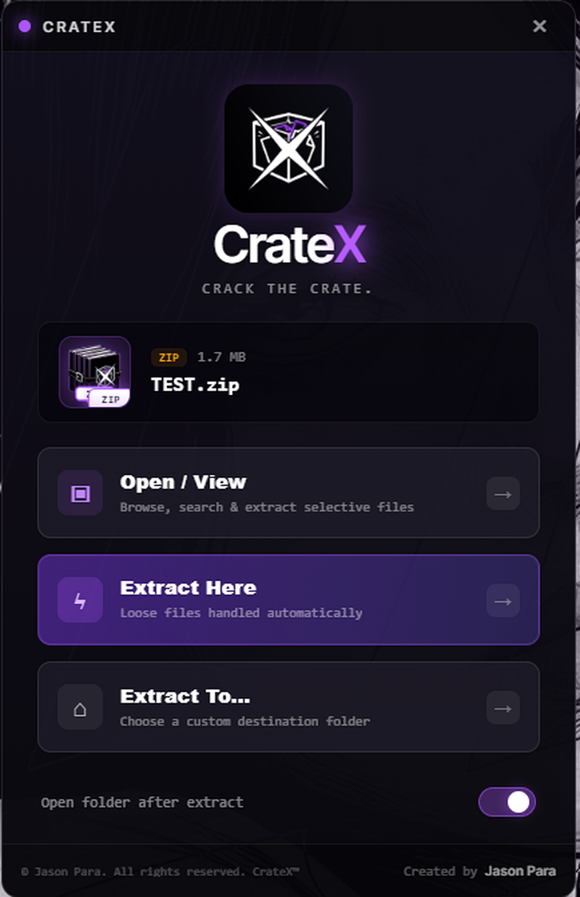
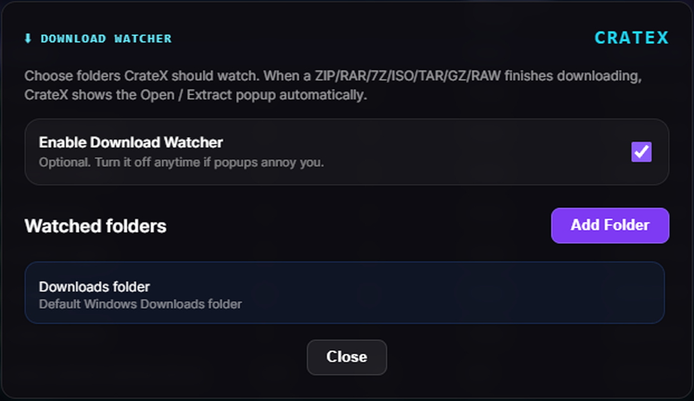
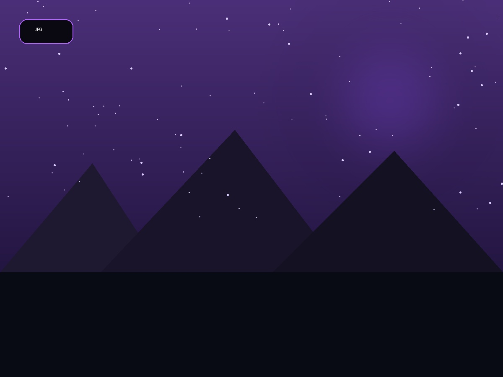
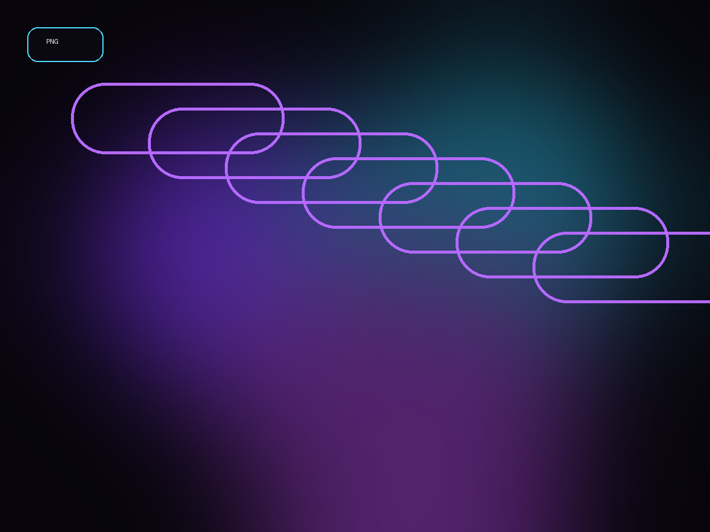
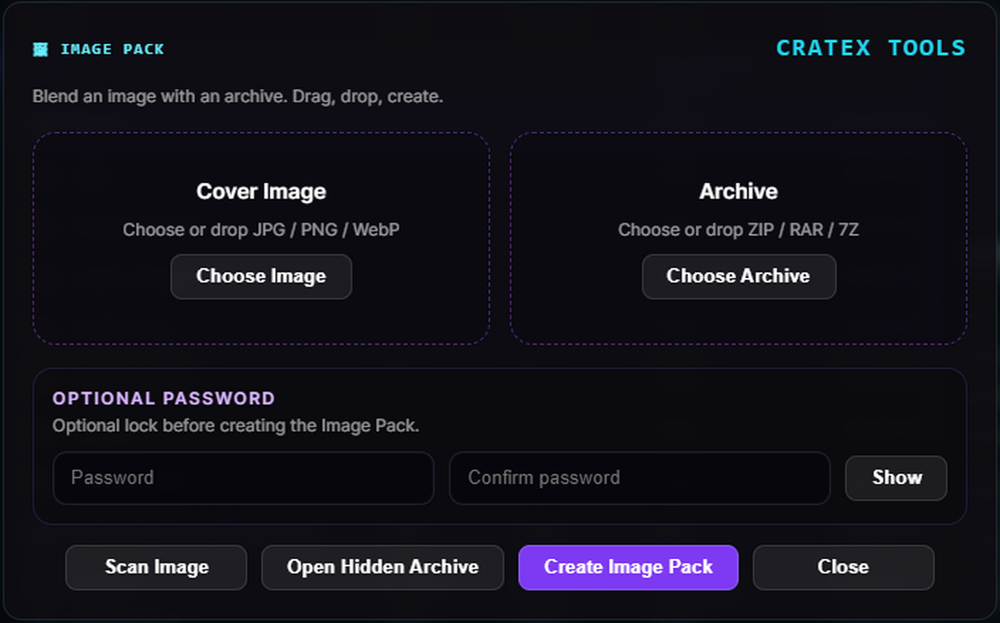
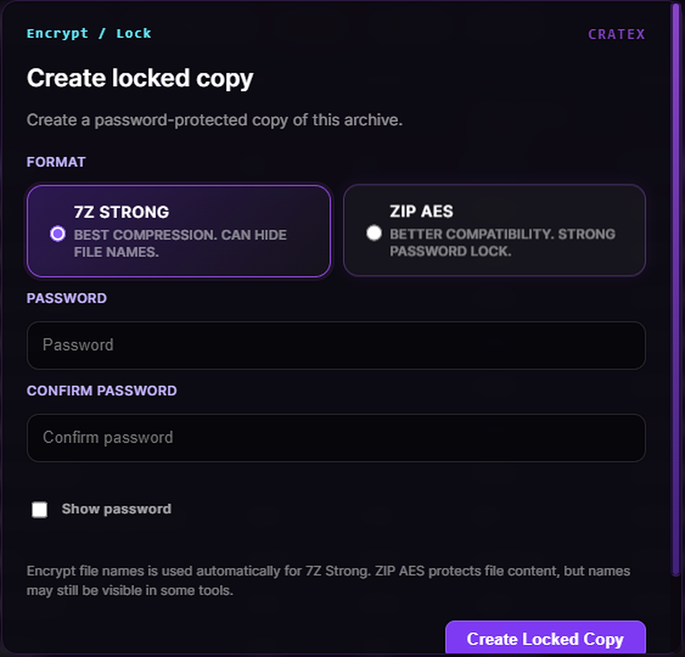
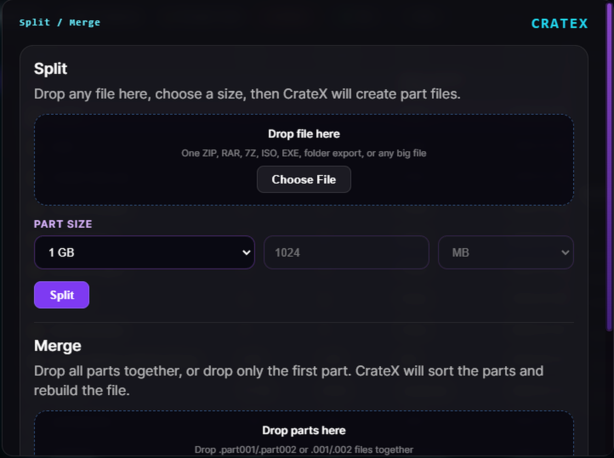
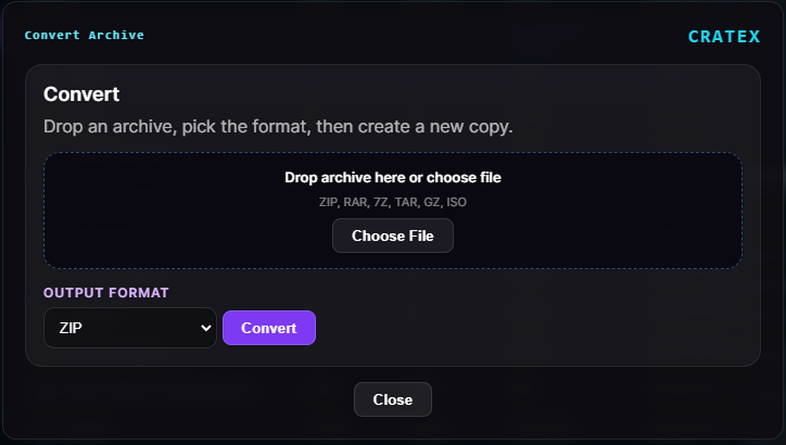

Open / View
Browse archive contents before extracting.

CrateXSkip the repeated right-click routine. Double-click an archive and CrateX puts Open, View and Extract actions exactly where you need them.

CrateX can watch your Downloads folder—or any folder you choose—and bring up archive actions as soon as a supported file arrives.


JPG COVER
PNG COVER
Combine a cover image with an archive, add an optional password, scan an Image Pack and reopen the hidden content later.
Save and organize archive passwords inside CrateX, then find the right one without keeping random notes across your desktop.
Create protected archive copies with a clean password workflow and two practical format choices.

Split large files into numbered parts with preset or custom sizes, then merge them in the correct order.

Drop an archive, choose the new format and let CrateX create a converted copy without the manual extract-and-rebuild process.

Everyday actions stay visible, while deeper tools are ready when the job gets bigger.
Browse archive contents before extracting.
Take only the files you need.
Create archives from files and folders.
Check integrity before using or sharing.
Inspect images, text, PDFs and supported content.
Launch files with their Windows application.
Remove unnecessary content more easily.
Inspect archives before extraction.
Keep longer operations visible and organized.
Use CrateX from Windows right-click menus.
Traditional archive work repeats the same steps: right-click, find more options, choose an action, then confirm a destination. CrateX shortens that routine and puts the useful choices first.
CrateX helps you work faster, but your files, passwords and decisions remain under your control.
Keep a separate copy before deleting, encrypting, converting, repairing, splitting, merging or replacing important files.
To the maximum extent permitted by law, CrateX and its creator are not liable for lost data, damaged files, corrupted archives, interrupted operations or resulting losses.
Protect and remember encryption passwords. A forgotten password may make an archive impossible to recover.
Only manage files you own or are authorized to use. Do not use CrateX for illegal, harmful, infringing or unauthorized content.
Read the complete Terms of Use and Disclaimer for backup, password, internet-download and liability guidance.
Instead of repeatedly opening right-click menus, CrateX can present the key actions immediately when you double-click a supported archive.
No. Core archive operations run locally on your Windows PC.
No. It is optional and can be enabled or disabled whenever you choose.
Keep a separate backup. This is especially important before encryption, conversion, deletion, repair, split or merge operations.
Get the CrateX setup for Windows and keep every archive tool in one place.
Download Setup ↗ Windows 10 & 11 · 64-bit · By downloading, you agree to the Terms of Use.